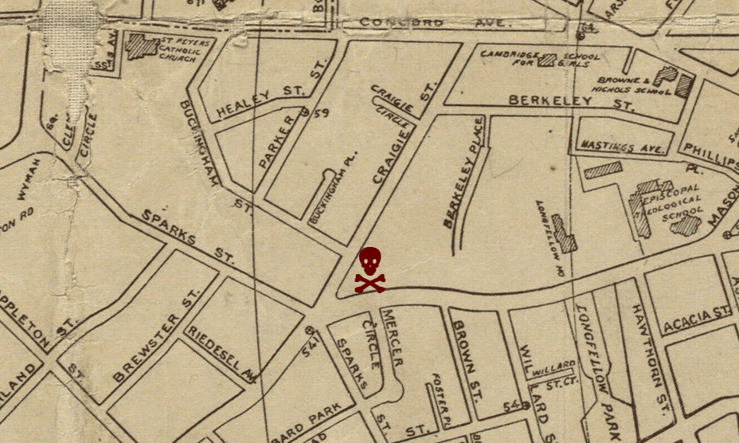

This page has audio that you're not experiencing. Use a different browser.  If my body is a map of everything that passes close to it, it approximates. It was in a small park, or maybe a yard, there were some trees, pine I think, with no low branches and some bushes between the small clearing and the street. Brattle and Craigie, I think. Dave and I slept there for a while—it might have been the first place I slept on the ground in the city. I only remember one night clearly—I sat on my cape (yes, a black velvet cape in the summer, and I was glad of it too, it was way more useful than a coat). I sat on my cape by the bushes and I was crying, but without any tears. I had a razor, one of those square box-cuter replacement blades I always carried. It was extremely dark for the city and I took the razor and cut across the top of my left forearm, outside to inside at a diagonal left to right. This was a thing I'd started doing after seeing the scars on another girl's arm. I wanted to understand, at first, but kept doing it because it felt good. Adreniline, release. I also liked the sight of blood, and the look of the scars—so much whiter than my skin. But it was so dark I didn't realize how much pressure I'd used until I felt the blood coating my arm like a sleeve. More than I'd ever seen before. Dave scolded me, handed me some napkins to staunch the bleeding. The only other impression I have of that clearing is of my pet rat Damien's plastic cage in it. But I'm not sure that's right: he was lost early in the summer, but I remember having him at the telemarketing job too, which was later, and I'd stopped seeing Dave and sleeping in the clearing by then.
If my body is a map of everything that passes close to it, it approximates. It was in a small park, or maybe a yard, there were some trees, pine I think, with no low branches and some bushes between the small clearing and the street. Brattle and Craigie, I think. Dave and I slept there for a while—it might have been the first place I slept on the ground in the city. I only remember one night clearly—I sat on my cape (yes, a black velvet cape in the summer, and I was glad of it too, it was way more useful than a coat). I sat on my cape by the bushes and I was crying, but without any tears. I had a razor, one of those square box-cuter replacement blades I always carried. It was extremely dark for the city and I took the razor and cut across the top of my left forearm, outside to inside at a diagonal left to right. This was a thing I'd started doing after seeing the scars on another girl's arm. I wanted to understand, at first, but kept doing it because it felt good. Adreniline, release. I also liked the sight of blood, and the look of the scars—so much whiter than my skin. But it was so dark I didn't realize how much pressure I'd used until I felt the blood coating my arm like a sleeve. More than I'd ever seen before. Dave scolded me, handed me some napkins to staunch the bleeding. The only other impression I have of that clearing is of my pet rat Damien's plastic cage in it. But I'm not sure that's right: he was lost early in the summer, but I remember having him at the telemarketing job too, which was later, and I'd stopped seeing Dave and sleeping in the clearing by then.